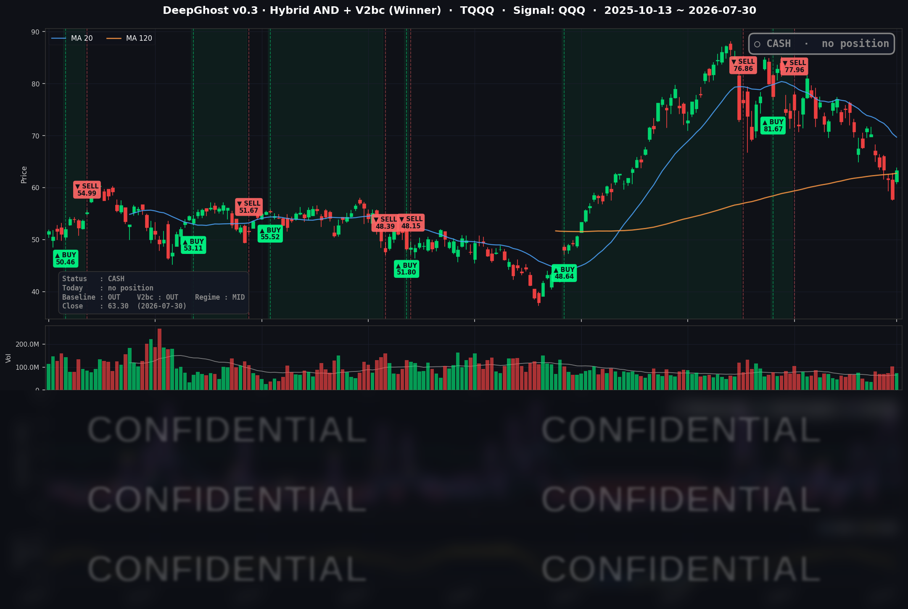

👻 매일 시그널과 히스토리를 홈페이지에서 한눈에 → www.ghostai.co.kr
마이크로소프트·아마존 어닝에 나스닥이 6월 이후 가장 크게 올랐습니다. 데드캣 바운스인지 아니면 진짜 반등의 서막을 올린 것인지는 며칠 더 보아야 합니다. 금리, 물가 이슈가 부각되면 다시 되돌릴 수 있습니다.
📊 오늘의 매매 신호
| 항목 | 내용 |
|---|---|
| 오늘 할 일 | ✅ 아무것도 안 해도 됩니다 |
| 포지션 상태 | 💵 현금 보유 중 (OUT OF POSITION) |
| 현금 보유 기간 | 2026-06-29 ~ 2026-07-30 (23거래일) |
| TQQQ 종가 | $63.30 (+9.61%) |
지수가 강하게 반등한 날입니다. 신호축인 QQQ가 하루 +3.30% 오르면서 모델의 핵심 지표는 방향상 '진입 쪽'으로 돌아섰지만, 진입을 확정 짓는 '연속성 조건'에는 아직 미치지 못했습니다.
TQQQ 시그널 — OUT OF POSITION
현재 상태: 현금 보유 중 | 신규 진입·청산 신호 없음

어제 언급한대로 모델의 주요 출력지표가 최고점 가까이 찍었습니다. 역사적으로 보았을때 이런 경우 바닥이었었습니다. 하지만 찐 반등일지 아니면 데드캣 바운스일지는 조금 더 지켜 봐야합니다. 오늘 지표는 진입 쪽으로 방향을 돌렸습니다. 하지만 추세확인은 어려운 상황입니다.
오늘 상승은 마이크로소프트·아마존 같은 개별 기업의 실적 이벤트가 만든 것입니다. 이벤트가 소화되고 나면 되돌림이 나올 수 있는데, 하락이 3배로 증폭되는 레버리지 상품에서는 이 되돌림 리스크가 특히 큽니다. 게다가 저변에는 매파적 연준과 오르는 장기 금리라는 역풍이 깔려 있습니다.
오늘 미국 시장 — 시황 요약
지수 마감
| 지수 | 종가 | 등락률 |
|---|---|---|
| S&P 500 | 7,437.63 | +1.66% |
| 나스닥 종합 | 25,122.18 | +2.78% |
| 다우 존스 | 52,208.06 | +1.19% |
| 러셀 2000 | 2,946.10 | +1.37% |
네 개 지수가 모두 오른 리스크온 세션이었고, 그 중심은 빅테크였습니다. 나스닥(+2.78%)이 6월 이후 최고의 하루를 보내며 다우(+1.19%)·러셀 2000(+1.37%) 상승폭의 두 배 넘게 앞섰습니다. 대형 기술주 어닝이 지수를 통째로 끌어올린 전형적인 'AI 실적 랠리' 구조였습니다.
국채 금리 동향
| 만기 | 수익률 | 전일 대비 |
|---|---|---|
| 3개월 | 3.675% | +1.7 bp |
| 10년 | 4.663% | +4.1 bp |
| 30년 | 5.208% | +6.5 bp |
모든 만기 금리가 올랐고, 특히 장기물이 더 크게 뛴 '베어 스티프닝'이 나타났습니다(30년 +6.5bp > 10년 +4.1bp). 10년-3개월 스프레드는 +98.8bp로 곡선은 정상적인 우상향을 유지했습니다. 연준이 완화 힌트를 지운 데다 근원 물가가 끈적하게 확인되면서 "높은 금리가 더 오래" 갈 것이라는 전망이 장기 금리를 밀어 올렸습니다. 보통 금리 상승은 고밸류 성장주에 역풍이지만, 이날만큼은 어닝의 힘이 금리 부담을 압도했습니다. 금리가 '브레이크'가 아니라 '무시된' 하루였던 셈입니다.
연준 발언 & 금리 패스
7월 FOMC는 기준금리를 3.50-3.75%로 5회 연속 동결했습니다. 다만 표결은 9 대 3으로 세 명이 "더 긴축적이어야 한다"며 반대했고, 케빈 워시(Kevin Warsh) 의장 체제 아래 성명서에서 향후 금리 경로 안내(포워드 가이던스)마저 제거됐습니다. 워시 의장은 금리 방향에 대한 힌트를 주지 않으면서도 "2% 물가 목표 달성에 필요한 조치는 취하겠다"는 톤을 유지했습니다. 시장의 해석은 '매파적 동결'입니다. 9월 회의까지는 데이터에 의존하겠다는 입장으로, 조기 인하 기대는 뒤로 밀렸습니다.
오늘의 핵심 이슈
- 마이크로소프트 어닝 대박이 나스닥을 끌어올렸습니다. 클라우드 사업(Azure) 매출이 전년 대비 +43% 성장하며 시장 눈높이를 넘어섰고, AI 인프라에 쏟은 투자가 실제 매출로 회수되고 있음을 보여줬습니다. 주가는 하루 만에 크게 뛰며 세션을 주도했습니다.
- 아마존도 클라우드 재가속으로 힘을 보탰습니다. 정규장에서 강세를 보인 데 이어, 장 마감 후 발표된 실적에서 AWS 성장률이 다시 살아나며 시간외에서 추가로 올랐습니다. 반대로 메타는 AI 투자 확대에 대한 시장의 반발로 -7.95% 급락했습니다. 같은 'AI 지출'이라는 테마가 실적 회수 가시성에 따라 정반대로 평가받은, 이른바 '옥석 가리기'의 시작이었습니다.
- 반도체·메모리가 섹터 전반에서 튀어 올랐습니다. 인텔의 어닝 서프라이즈와 삼성발 메모리 슈퍼사이클 재확인이 겹치며 관련 종목들이 강하게 반등했습니다.
변동성 & 투자심리
VIX(공포지수)는 전일 20.66에서 17.09(-17.28%)로 급락하며 20선 아래로 내려왔습니다. 어닝 랠리에 맞춰 공포가 빠르게 완화된 모습입니다. CNN 공포·탐욕 지수는 직전 'Fear(공포, 약 37)' 구간에 있었고, 이날의 강한 반등을 감안하면 공포 하단에서 중립 쪽으로 개선됐을 가능성이 큽니다. 다만 지수·심리의 낙관 이면에는 매파 연준·끈적한 물가·둔화하는 성장·오르는 장기 금리라는 역풍이 여전히 남아 있어, 낙관(주식)과 신중(매크로)이 뒤섞인 국면입니다.
매크로 & 원자재
- WTI 원유: $84.13 (-0.39%)
- 브렌트 원유: $89.45 (-1.42%)
- 금 선물: $4,163.70 (+3.20%) — 리스크온 속에서도 강세
FOMC 성명이 중동發 불확실성을 언급했지만, 이날 유가는 오히려 소폭 내렸습니다. 어닝 랠리가 지정학 프리미엄 서사를 압도한 셈입니다. 한편 위험자산이 오르는 날에 금까지 +3.2% 강세를 보인 것은, 인플레이션 헤지와 실질금리·달러 요인이 겹친 결과로 읽힙니다. 참고로 2분기 GDP 속보치는 +1.5%로 컨센서스(+2.1%)를 밑돌며 둔화됐고, 근원 물가는 여전히 목표를 웃돌아 완만한 스태그플레이션적 신호가 감지됐습니다.
주요 종목 동향
| 종목 | 종가 | 등락률 | 비고 |
|---|---|---|---|
| MU | $874.66 | +18.36% | 삼성발 AI 메모리 슈퍼사이클 재확인, 당일 최대 상승 |
| MSFT | $451.10 | +15.51% | 클라우드(Azure) +43%, 세션 주도주 |
| INTC | $91.13 | +11.30% | Q2 매출 +25%, 파운드리 신규 고객 확보 |
| AVGO | $387.84 | +4.73% | 반도체·클라우드 투자 수혜 |
| AMZN | $235.50 | +3.90% | 정규장 강세, 장 마감 후 어닝은 시간외 상승 |
| TSLA | $308.85 | +3.53% | 리스크온 동참 |
| NVDA | $195.04 | +2.65% | 반도체 랠리 동참 |
| GOOGL | $333.66 | -0.91% | 빅테크 랠리에서 소외 |
| AAPL | $333.43 | -1.41% | 정규장 관망세. 장 마감 후 어닝은 아래 참고 |
| QCOM | $151.60 | -2.62% | 반도체 랠리에서 역행 |
| META | $539.03 | -7.95% | AI 투자 확대 반발, 실적 미스 |
애플 어닝은 '정규장'과 '시간외'를 구분해서 봐야 합니다. 위 표의 애플 종가 -1.41%는 어닝 발표 전 정규장 기준입니다. 애플은 장 마감 후 실적을 냈고, 서비스·중국 부진과 공급 제약 가이던스로 시간외에서 약세를 보였습니다. 이 시간외 반응은 다음 거래일(7/31) 정규장 가격에 반영될 예정이라, 오늘 종가만 보고 실적을 단정하기는 이릅니다. 같은 날 아마존은 반대로 시간외에서 강세를 보여, 같은 어닝 시즌에도 종목별 명암이 극명하게 갈렸습니다.
Ghost.AI — Quantitative AI Investment
Model: DeepGhost v0.3 | Transformer-Based Deep Learning
Coverage: 13 tickers | Updated every trading day after US market close
⚠️ 본 자료는 정보 제공 목적으로만 작성되었으며 투자 권유가 아닙니다. 모든 투자의 책임은 투자자 본인에게 있습니다. 과거 성과가 미래 수익을 보장하지 않습니다.
[유의사항]
- 본 서비스는 불특정 다수를 대상으로 발행되는 단방향 정보 제공 서비스이며, 투자자 개인의 재산 상황·투자 목적·위험 선호도를 반영한 개별 투자 조언이 아닙니다.
- 고스트에이아이 주식회사는 고객과 쌍방향 의사소통(개별 상담, 맞춤형 자문 등)을 제공하지 않습니다.
- 본 콘텐츠는 투자 권유 또는 매매 주문의 청약·청약의 권유에 해당하지 않으며, 최종 투자 판단 및 그에 따른 손익의 책임은 전적으로 투자자 본인에게 있습니다.
고스트에이아이 주식회사